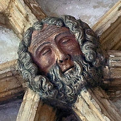

 |
||
| STONEMASONS | ||
|
Протягом чверті століття компанія Stonemasons працювала над тим, щоб утвердитися як провідний підрядник будівельних робіт у будівельній галузі. Спочатку Stonemasons спеціалізувалася на проектуванні та монтажі великих технічних підпірних стінок. Багаторічний досвід і участь у складних проектах перетворили Stonemasons у підрядника з облаштування будівельних робіт «під ключ», дозволяючи нам пропонувати безліч динамічних рішень для об’єктів у різних сферах роботи;
Системи підпірних стін, системи блоків мощення з використанням різних середовищ, бетон на майданчику, архітектурні ландшафти, об’ємний камінь для зовнішніх робіт, кам’яна облицювання, кам’яна бруківка, габіонні конструкції та встановлення синтетичного газону. Ця еволюція та досвід дозволяють Stonemasons пропонувати нашим клієнтам економічно ефективні рішення для їхніх конкретних умов на місці. Stonemasons володіє широким портфоліо, яке включає проекти різного ступеня в багатьох секторах ринку.
Генеральні підрядники Головні підрядники Земельні забудовники Муніципалітети Шкільні округи Органи транспорту Промисловість, енергетика та технології Stonemasons добре фінансується та працює з низьким EMR, має здатність відповідати всім загальним вимогам страхування цивільної відповідальності та підтримувати контрактні проекти. Крім того, ми підтримуємо страхування комерційних автомобілів і робітників. Безпека є пріоритетом для Stonemasons; Тому ми розробили програму безпеки з незалежною щорічною інспекцією, проводимо щотижневі зустрічі з безпеки та надаємо Посібник із небезпечних комунікацій для кожного проекту. Крім того, кожен працівник проходить мінімальне 30-годинне навчання OSHA. Ці ініціативи з безпеки дозволяють нашій компанії відповідати вимогам страхування та безпеки на будь-якому проекті. Будучи частиною вашої команди, Stonemasons забезпечить координацію з керівником об’єкта та іншими субпідрядниками, щоб виконати наш обсяг робіт рентабельно та вчасно. Stonemasons забезпечить вашій організації максимальну надійність і першочергове обслуговування. Компанія Stonemasons зарекомендувала себе, розвиваючи довгострокові та взаємовигідні відносини з нашими клієнтами. Ми пишаємося тим, що підтримуємо ці відносини з постійними клієнтами, а також маємо можливість розвивати нові відносини. |
||